Analiza rješenja · JOI Spring Camp 2022 · Dan 3
Mravi i šećer
O ovom članku
Tekst je prijevod službene japanske prezentacije rješenja, preoblikovan u članak. Slajdovi su ugrađeni kao slike; natpis pod svakim slajdom je prijevod teksta na njemu. Dijelovi označeni kao trenerska napomena nisu u izvornoj prezentaciji — dodani su da popune korake koje slajdovi preskaču ili samo skiciraju.
-
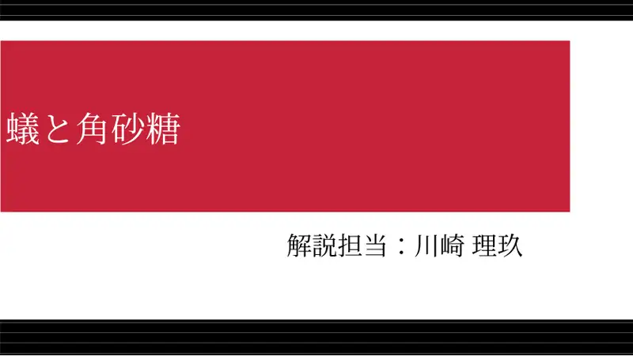
1Naslovni slajd: Ants and Sugar; analiza: Kawasaki Riku. -
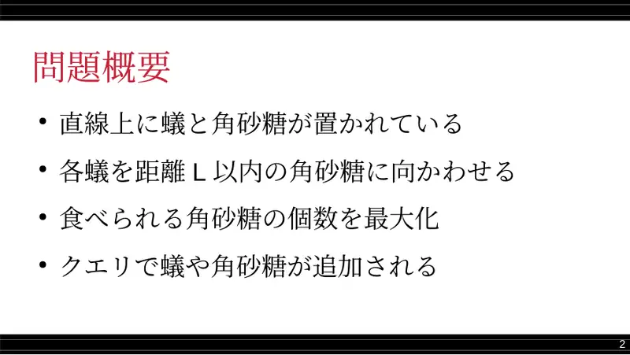
2Sažetak. Mravi i kockice na pravcu; svaki mrav ide do kockice na udaljenosti $\le L$; maksimiziraj broj pojedenih kockica; upiti dodaju mrave i kockice. -
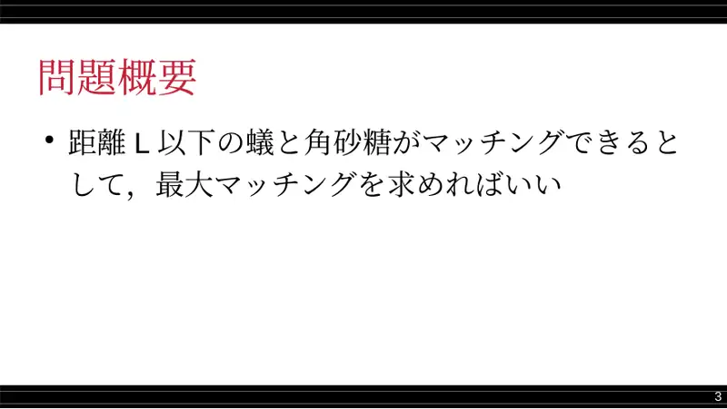
3Mrav i kockica na udaljenosti $\le L$ mogu se spariti — traži se najveće sparivanje.
Podzadatak 1 6 bodova
-
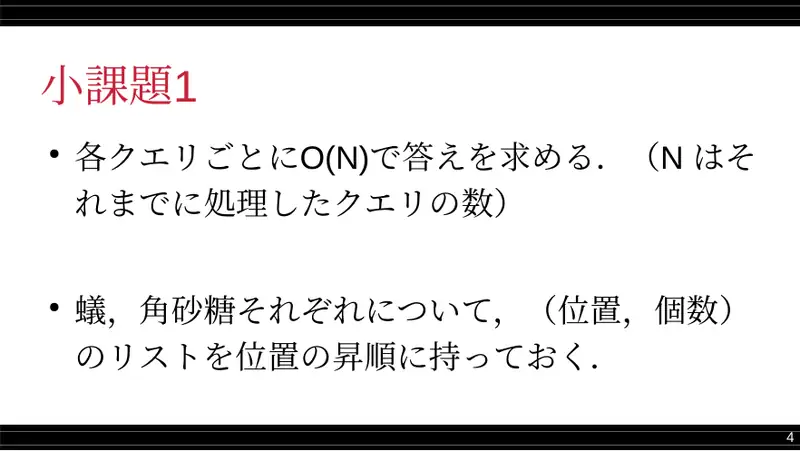
4Za svaki upit $O(N)$: liste (pozicija, broj) mrava i kockica sortirane po poziciji. -
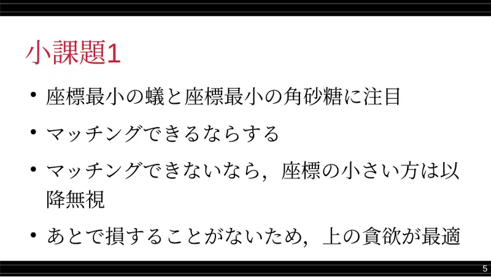
5Gledaj najlijevijeg mrava i najlijeviju kockicu: spari ako možeš; inače odbaci lijevi (više nikad ne može biti sparen). Greedy je optimalan jer ne gubi ništa kasnije. -
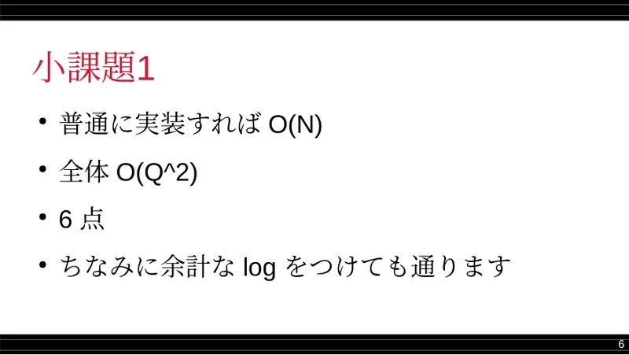
6$O(N)$ po upitu, $O(Q^2)$ — 6 bodova (i s dodatnim $\log$ prolazi).
Podzadatak 2 16 bodova
-
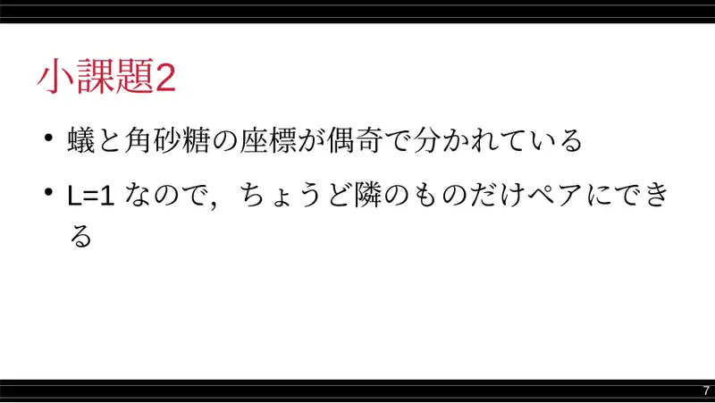
7Parnost razdvaja mrave i kockice; $L = 1$ → samo susjedne točke se sparuju. -
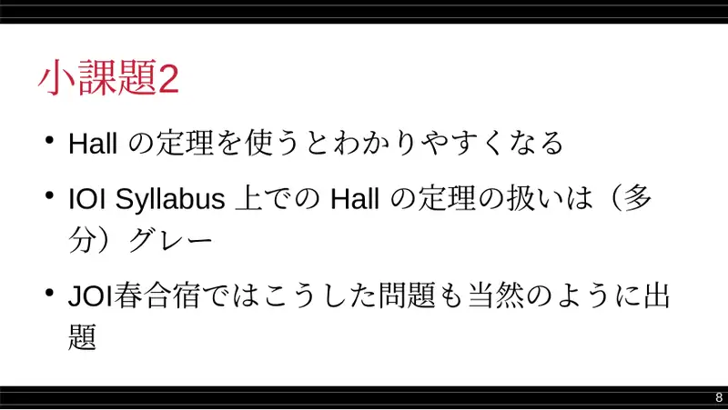
8Hallov teorem olakšava; na IOI syllabusu je „siv”, ali na JOI kampu se pojavljuje. -
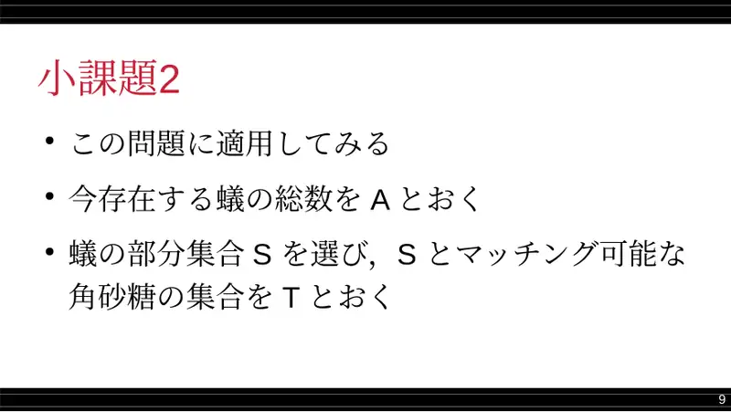
9$A$ = ukupno mrava; za podskup mrava $S$ neka je $T$ skup kockica sparivih s $S$. -
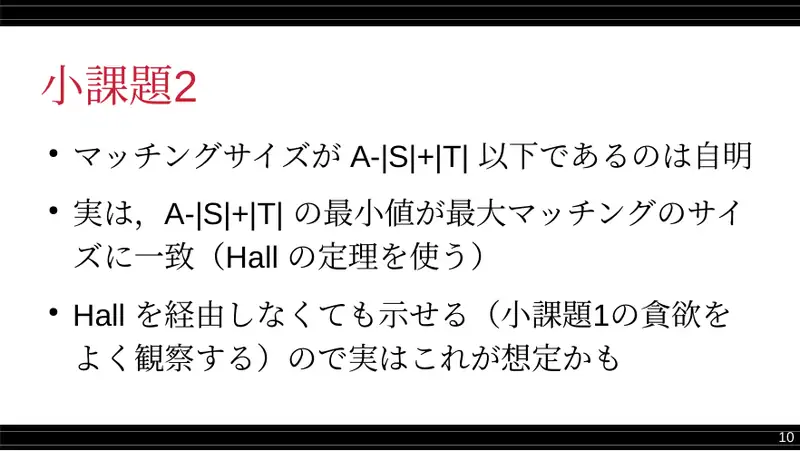
10Očito sparivanje $\le A - |S| + |T|$; Hall: minimum tog izraza jednak je najvećem sparivanju. Može se dokazati i promatranjem greedyja iz podzadatka 1. -
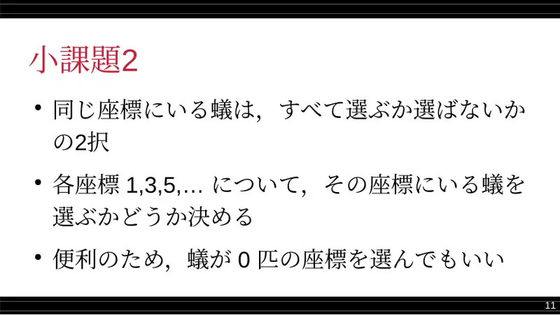
11Mravi na istoj poziciji: svi ili nijedan. Za svaku poziciju $1, 3, 5, \ldots$ odluči; radi udobnosti dopuštene i pozicije s 0 mrava. -
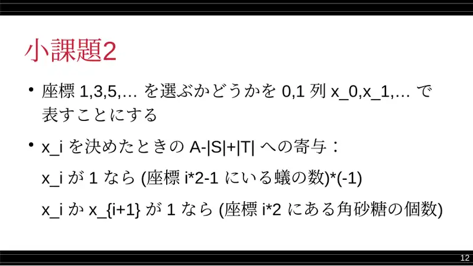
120/1 niz $x_0, x_1, \ldots$: $x_i = 1$ daje $-(\text{mravi na } 2i-1)$; $x_i = 1$ ili $x_{i+1} = 1$ daje $+(\text{kockice na } 2i)$. -
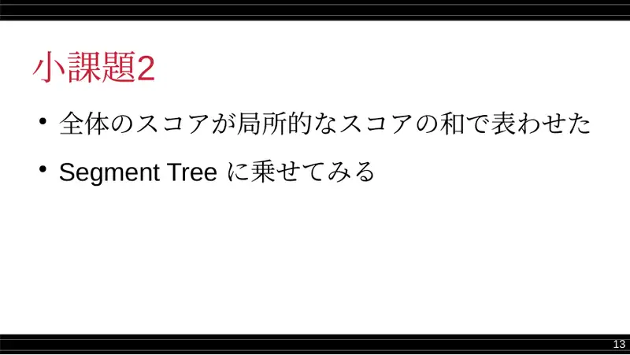
13Ukupan rezultat je zbroj lokalnih — stavi na segmentno stablo. -
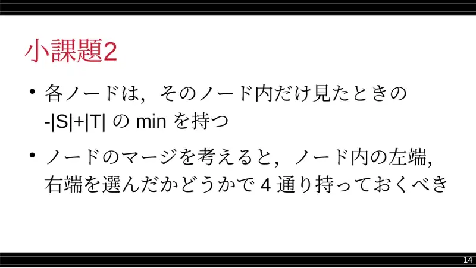
14Čvor pamti $\min(-|S|+|T|)$ unutar sebe; zbog spajanja, 4 varijante po tome jesu li lijevi/desni kraj odabrani. -
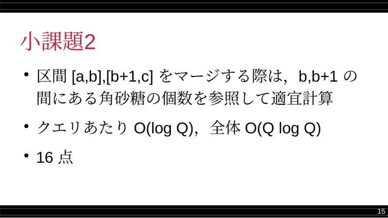
15Spajanje $[a,b]$ i $[b+1,c]$ koristi broj kockica između $b$ i $b+1$. $O(\log Q)$ po upitu — 16 bodova.
Podzadaci 3–4 78 bodova
-
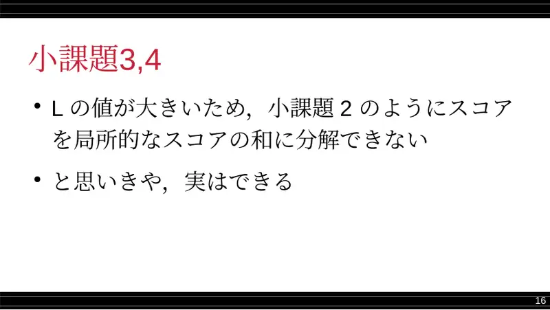
16Za veliki $L$ rezultat se naizgled ne rastavlja na lokalne članove… a zapravo se rastavlja. -
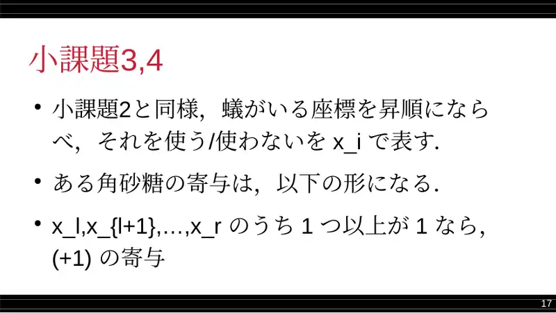
17Pozicije mrava sortirane; $x_i$ = koristi se. Kockica doprinosi $+1$ ako je bar jedan od $x_l, \ldots, x_r$ jednak 1. -
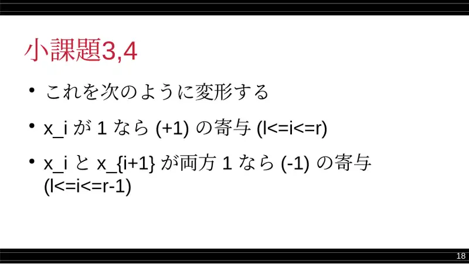
18Preoblikuj: $+1$ za svaki $x_i = 1$ ($l \le i \le r$), $-1$ za svaki par $x_i = x_{i+1} = 1$ ($l \le i < r$). -
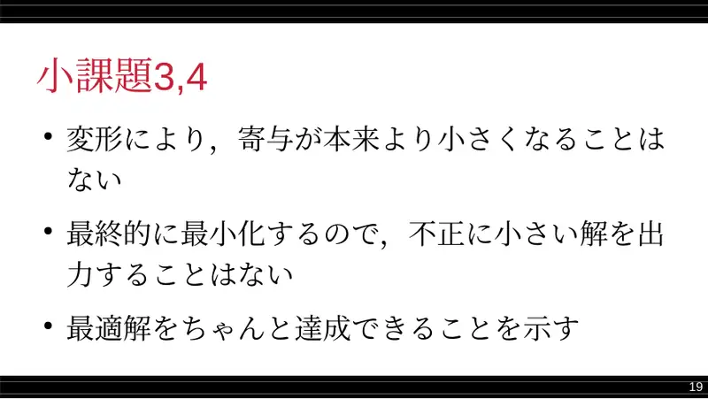
19Preoblikovani doprinos nikad nije manji od pravog; minimiziramo, pa ne možemo dobiti premalen rezultat. Treba pokazati da se optimum postiže. -
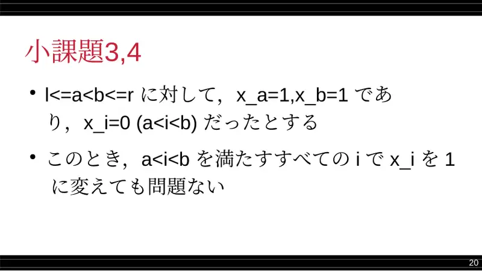
20Ako je $x_a = x_b = 1$ ($l \le a < b \le r$) i $x_i = 0$ između, smijemo sve između postaviti na 1. -
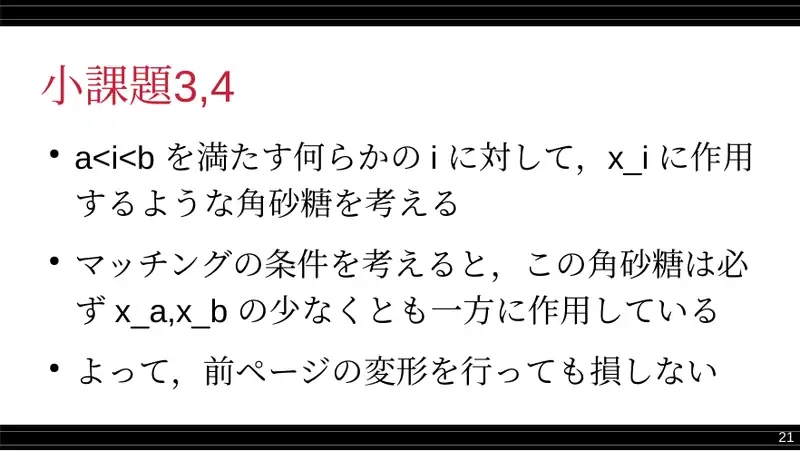
21Kockica koja djeluje na neki $i$ između nužno djeluje i na $x_a$ ili $x_b$ (zbog uvjeta udaljenosti), pa zapunjavanje ne šteti. -
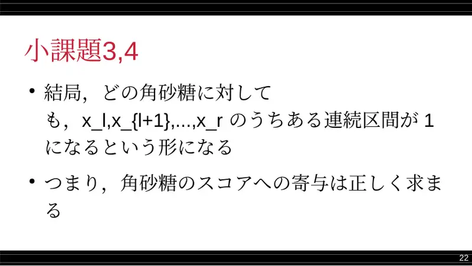
22Dakle za svaku kockicu odabrani unutar $[l,r]$ čine jedan neprekidan blok — doprinos je točan. -
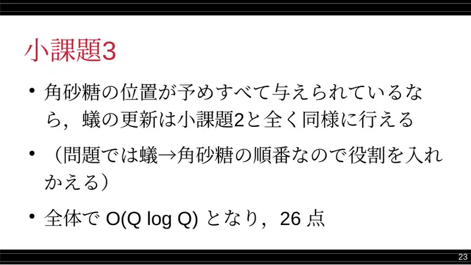
23Podzadatak 3: ako su pozicije kockica poznate unaprijed, ažuriranja mrava rade kao u podzadatku 2 (zamijeni uloge jer dolaze mravi pa kockice). $O(Q\log Q)$ — 26 bodova.
-
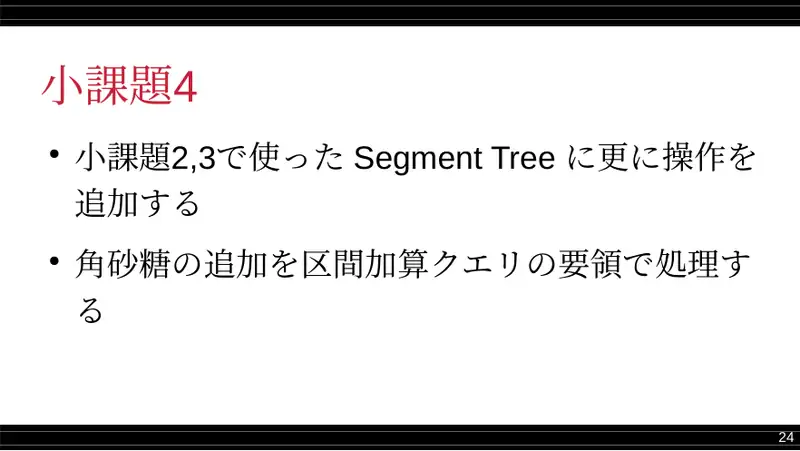
24Podzadatak 4: dodaj operaciju u segmentno stablo — dodavanje kockice kao intervalno dodavanje. -
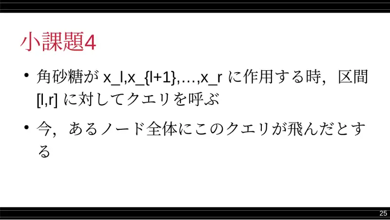
25Kockica djeluje na $x_l..x_r$: intervalni upit na $[l,r]$; promotri čvor potpuno pokriven. -
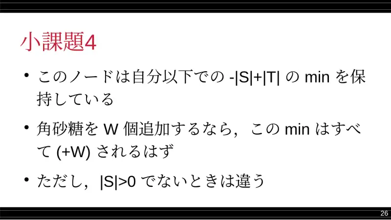
26Čvor pamti $\min(-|S|+|T|)$; dodavanjem $W$ kockica minimum bi trebao porasti za $W$ — osim ako je $|S| = 0$. -
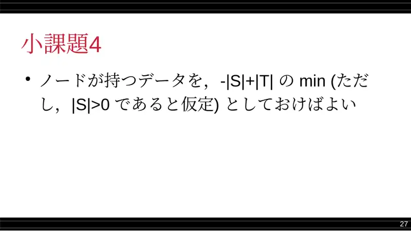
27Zato pamti minimum uz pretpostavku $|S| > 0$. -
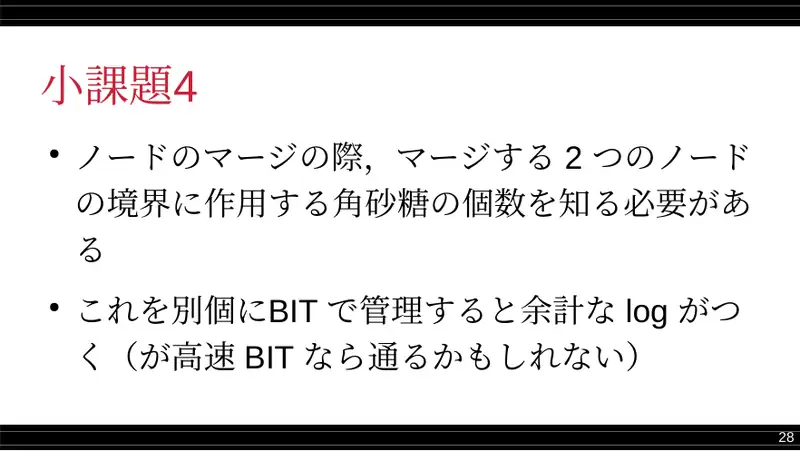
28Pri spajanju treba broj kockica koje djeluju na granicu djece; zaseban BIT dodaje $\log$ (brzi BIT možda prolazi). -
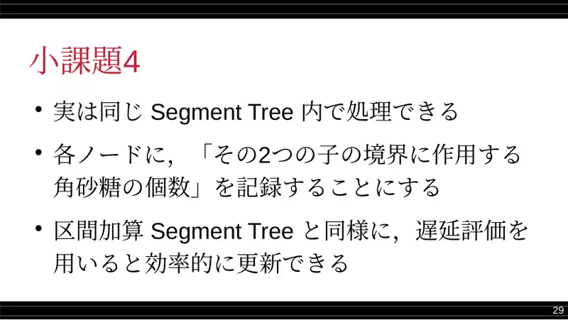
29Može unutar istog stabla: svaki čvor pamti broj kockica na granici svoje djece; lijena propagacija kao kod intervalnog dodavanja. -
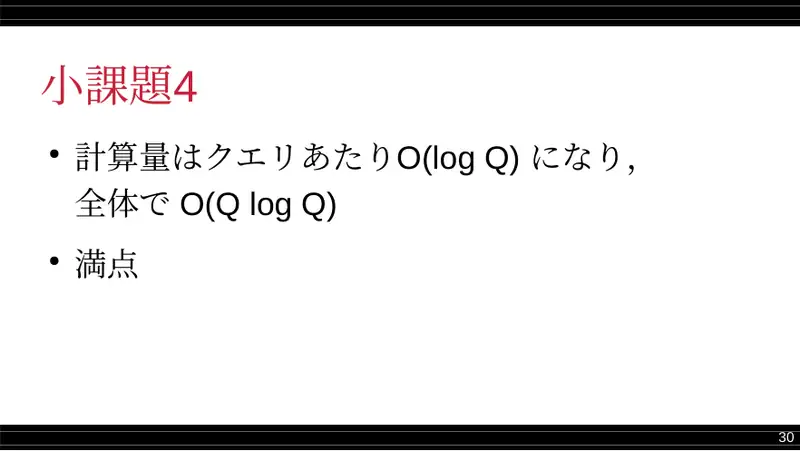
30$O(\log Q)$ po upitu, ukupno $O(Q\log Q)$ — puni bodovi.
-
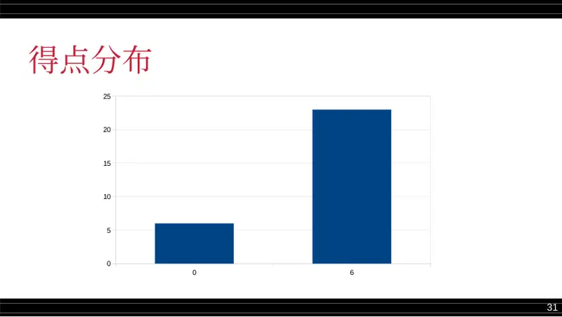
31Raspodjela bodova.
Sažetak
- Sparivanje = $\min_S (A - |S| + |N(S)|)$; $S$ po pozicijama mrava (offline poznatim).
- ILI po intervalu → broj blokova ($\sum x_i - \sum x_i x_{i+1}$); lema o zapunjavanju rupa opravdava zamjenu.
- Segmentno stablo s 4 minimuma po nepraznim konfiguracijama, granicama $d_{mid}$ i lijenim „$+w$”: $O(Q\log Q)$.